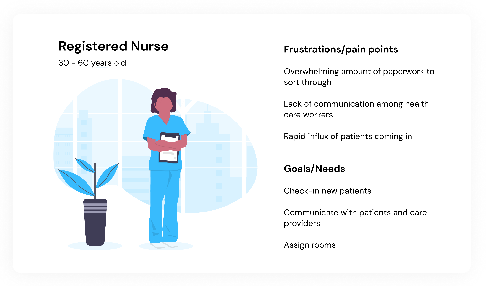
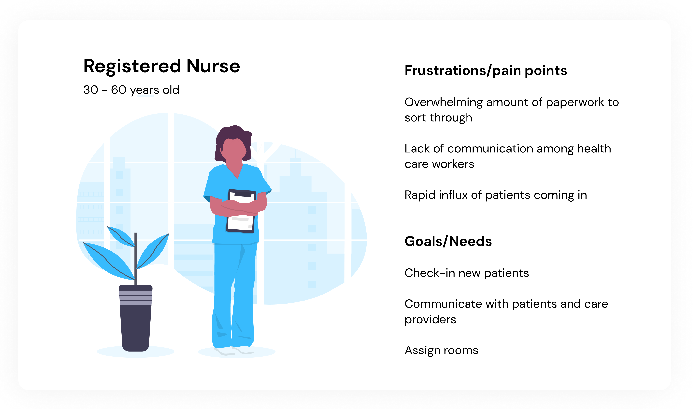

Problem Space
What is the current state of our hospital care system?
With the novel coronavirus pandemic, hospitals are facing a rapid influx of patients coming in to be identified, isolated, tested, or admitted for COVID-19. This
has led cities and hospitals to create external testing setups and temporary hospital-like camps to accommodate for this massive influx of patients.


 
